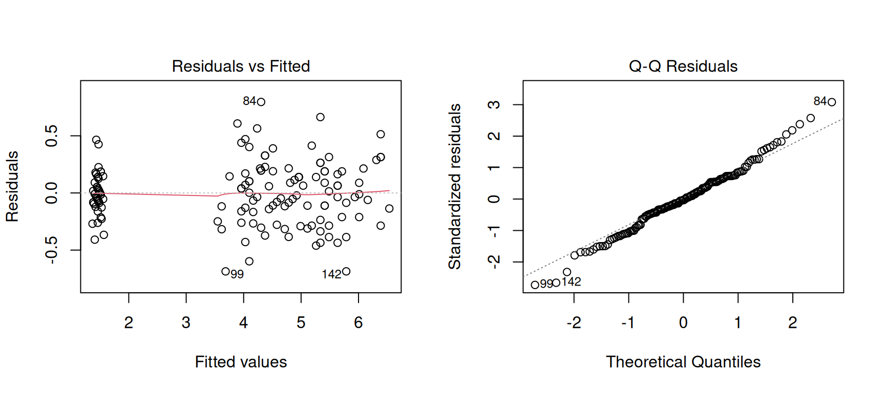
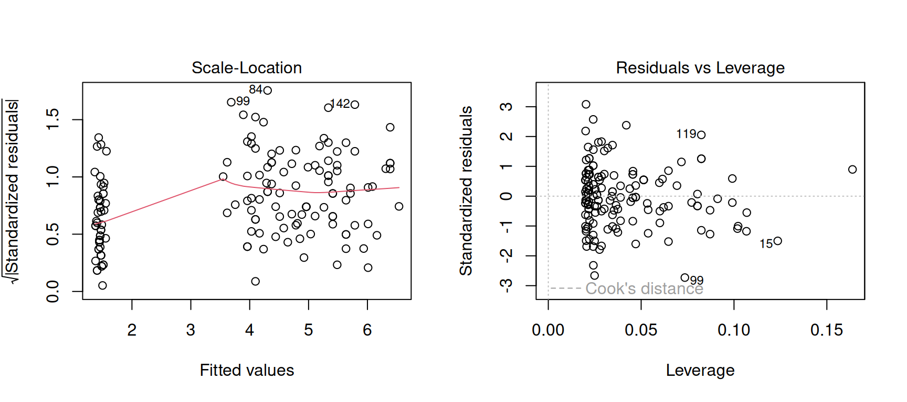

Call:
lm(formula = Petal.Length ~ Sepal.Length, data = iris)
Residuals:
Min 1Q Median 3Q Max
-2.47747 -0.59072 -0.00668 0.60484 2.49512
Coefficients:
Estimate Std. Error t value Pr(>|t|)
(Intercept) -7.10144 0.50666 -14.02 <2e-16 ***
Sepal.Length 1.85843 0.08586 21.65 <2e-16 ***
---
Signif. codes: 0 '***' 0.001 '**' 0.01 '*' 0.05 '.' 0.1 ' ' 1
Residual standard error: 0.8678 on 148 degrees of freedom
Multiple R-squared: 0.76, Adjusted R-squared: 0.7583
F-statistic: 468.6 on 1 and 148 DF, p-value: < 2.2e-16Lab 04: Modelos lineales
Actividad
Fase 1: Aprendizaje independiente en su grupo original (5 minutos)
- Nos dividimos en grupos de 5 personas.
- Todo el grupo repasa junto los conceptos básicos de regresión lineal (sección común del material).
- Cada grupo tiene además un experto para la salida de un modelo lineal:
- con predictor continuo
- con predictor categórico
- con interacción (continuo × categórico)
- diagnósticos I: linealidad y normalidad
- diagnósticos II: varianza y observaciones influyentes
- El experto estudia el material sobre su tema específico.
Fase 2: Aprendizaje colaborativo en grupos de expertos (5 + 2 minutos)
- Los expertos de cada tema se reúnen en grupos para compartir sus conocimientos.
- Aclaran dudas entre expertos, toman notas y se preparan para enseñar a su grupo original.
- El experto prepara un reporte breve de 3 puntos:
- ¿Cuál es la pregunta que este análisis permite contestar?
- ¿Qué parte de la salida hay que mirar para contestarla?
- ¿Cómo explicaría el resultado en lenguaje biológico, sin usar lenguaje estadístico?
Fase 3: Enseñanza en el grupo original (2 x 5 minutos)
- Cada experto regresa a su grupo original y enseña a los demás miembros del grupo sobre su tema.
- Se discuten y resuelven dudas sobre los temas presentados por los expertos.
Fase 4: Reflexión y cierre (5 minutos)
- Se comparten conclusiones y se resuelven dudas finales con toda la clase.
- Cada grupo original (no grupo de expertos) tiene que resolver la tarea de la ultima página (caja roja).
El reporte de Fase 2, escrito en su bitacora, representa su entrada de bitacora calificada
Material
En lo que sigue se presentan los conceptos básicos de los modelos lineales (lm()) y cómo interpretar su salida. Todos los ejemplos usan el dataset iris, incluido con R.
Conceptos básicos de regresión lineal (todos)
Un modelo lineal describe una variable respuesta continua (y) en función de uno o más predictores (x):
- Los predictores pueden ser continuos (una pendiente) o categóricos (diferencias entre grupos).
lm()ajusta el modelo;summary()muestra los coeficientes estimados, su incertidumbre y pruebas asociadas.- Supuestos del modelo:
- relación lineal – la relación entre los predictores y la respuesta debe ser aproximadamente lineal.
- residuos normales – los residuos del modelo deben seguir aproximadamente una distribución normal.
- varianza constante (homocedasticidad) – la dispersión de los residuos debe ser similar a lo largo de todos los valores predichos.
- independencia – los residuos deben ser independientes entre sí, sin correlación.
- relación lineal – la relación entre los predictores y la respuesta debe ser aproximadamente lineal.
modelo <- lm(y ~ x, data = datos)
summary(modelo)y: variable respuesta del modelo.x: predictor del modelo; puede haber cualquier número de predictores, continuos o categóricos.- Los predictores se combinan con
+para incluirlos de manera aditiva en el modelo. - Con
+, el modelo incluye los efectos de los predictores de manera aditiva, sin términos de interacción. - Para incluir interacciones entre predictores, se usa
*(por ejemplo,x1 * x2). En este caso el modelo considera tanto los efectos principales como la interacción entrex1yx2. - La interacción permite que el efecto de un predictor dependa del valor de otro predictor.
Resumen de un modelo lineal con un predictor continuo (experto 1)
modelo_continuo <- lm(Petal.Length ~ Sepal.Length, data = iris)- Estimate (
(Intercept)y pendiente): valor esperado deycuandox = 0, y cambio enypor cada unidad dex. - Std. Error / t value / Pr(>|t|): incertidumbre del coeficiente y prueba de si es diferente de cero.
- R² / R² ajustado: proporción de la varianza de
yexplicada por el modelo. - F-statistic y su p-value: prueba si el modelo en conjunto explica más que el modelo nulo (solo el intercepto).
Como calcular la ecuación del modelo y intervalos de confianza
\[ \quad y = \text{intercept} + \text{coef(Sepal.Length)} \cdot x = -7.1014 + 1.8584x \]
Los intervalos de confianza proporcionan un rango de valores plausibles para cada coeficiente del modelo. Si un intervalo incluye el valor cero, sugiere que el coeficiente podría no ser significativamente diferente de cero. Se pueden calcular con:
confint(modelo_continuo)Resumen de un modelo lineal con un predictor categórico (experto 2)
modelo_categorico <- lm(Petal.Length ~ Species, data = iris)- R utiliza el primer nivel del factor como nivel de referencia (en
iris,setosa), que queda absorbido en el(Intercept). (Intercept): valor promedio deypara el nivel de referencia.- Coeficientes de los otros niveles: diferencia promedio respecto al nivel de referencia, no el valor absoluto del grupo.
- R² / F-statistic: mismos conceptos que con predictor continuo, aplicados a la comparación entre grupos.
Call:
lm(formula = Petal.Length ~ Species, data = iris)
Residuals:
Min 1Q Median 3Q Max
-1.260 -0.258 0.038 0.240 1.348
Coefficients:
Estimate Std. Error t value Pr(>|t|)
(Intercept) 1.46200 0.06086 24.02 <2e-16 ***
Speciesversicolor 2.79800 0.08607 32.51 <2e-16 ***
Speciesvirginica 4.09000 0.08607 47.52 <2e-16 ***
---
Signif. codes: 0 '***' 0.001 '**' 0.01 '*' 0.05 '.' 0.1 ' ' 1
Residual standard error: 0.4303 on 147 degrees of freedom
Multiple R-squared: 0.9414, Adjusted R-squared: 0.9406
F-statistic: 1180 on 2 and 147 DF, p-value: < 2.2e-16
Como calcular el promedio de cada nivel
setosa: \[ \quad \bar{y} = \text{intercept} = 1.462 \]
versicolor: \[ \quad \bar{y} = \text{intercept} + \text{coef(versicolor)} = 1.462 + 2.798 = 4.260 \]
virginica: \[ \quad \bar{y} = \text{intercept} + \text{coef(virginica)} = 1.462 + 4.090 = 5.552 \]
Resumen (summary()) de un modelo lineal con dos predictores y su interacción (experto 3)
modelo_interaccion <- lm(Petal.Length ~ Sepal.Length * Species, data = iris)(Intercept): intercepto del nivel de referencia (setosa).Sepal.Length: pendiente para el nivel de referencia.Speciesversicolor,Speciesvirginica: diferencias en el intercepto respecto al nivel de referencia.Términos de interacción: diferencias en la pendiente respecto al nivel de referencia.
Call:
lm(formula = Petal.Length ~ Sepal.Length * Species, data = iris)
Residuals:
Min 1Q Median 3Q Max
-0.68611 -0.13442 -0.00856 0.15966 0.79607
Coefficients:
Estimate Std. Error t value Pr(>|t|)
(Intercept) 0.8031 0.5310 1.512 0.133
Sepal.Length 0.1316 0.1058 1.244 0.216
Speciesversicolor -0.6179 0.6837 -0.904 0.368
Speciesvirginica -0.1926 0.6578 -0.293 0.770
Sepal.Length:Speciesversicolor 0.5548 0.1281 4.330 2.78e-05 ***
Sepal.Length:Speciesvirginica 0.6184 0.1210 5.111 1.00e-06 ***
---
Signif. codes: 0 '***' 0.001 '**' 0.01 '*' 0.05 '.' 0.1 ' ' 1
Residual standard error: 0.2611 on 144 degrees of freedom
Multiple R-squared: 0.9789, Adjusted R-squared: 0.9781
F-statistic: 1333 on 5 and 144 DF, p-value: < 2.2e-16
Como calcular los efectos de cada nivel de la interacción
setosa: \[ \quad y_{\text{setosa}}=\text{intercept}+\text{coef(Sepal.Length)}\cdot x \]
versicolor: \[ \begin{aligned} \quad y &= \text{intercept}+\text{coef(versicolor)}+ \\ &\quad \big(\text{coef(Sepal.Length)}+\text{coef(Sepal.Length:Speciesversicolor)}\big)\cdot x \end{aligned} \]
virginica: \[\begin{aligned} \quad y &= \text{intercept}+\text{coef(virginica)}+ \\ &\quad \big(\text{coef(Sepal.Length)}+\text{coef(Sepal.Length:Speciesvirginica)}\big)\cdot x \end{aligned}\]
Diagnósticos gráficos I: linealidad y normalidad (experto 4)
plot(modelo_interaccion, which = c(1, 2))- Residuals vs Fitted: busca patrones o curvatura; una nube sin forma clara indica que la relación es razonablemente lineal.
- Normal Q-Q: los puntos deben seguir aproximadamente la línea diagonal; desviaciones fuertes en los extremos sugieren residuos no normales.
- Juntos, estos dos gráficos dicen si un modelo lineal es una descripción razonable de los datos.

Mas info
Residuals vs Fitted
Los residuos deberían distribuirse de manera aleatoria alrededor de cero. Algun patron sistemático indica que el modelo puede no estar capturando toda la estructura de los datos. Por ejemplo, un patrón en forma de “banano” sugiere que falta una transformación (por ejemplo, logarítmica) o un término no lineal.
Normal Q-Q
Con muestras grandes, el modelo lineal es bastante robusto a desviaciones leves de normalidad, así que un Q-Q plot “casi” recto, aunque no perfecto, muchas veces suele bastar. i.e., muchas veces no es necesario ‘hacer algo’ para para que todos los residuos quedan perfectamente en la línea.
Diagnósticos gráficos II: varianza y observaciones influyentes (experto 5)
plot(modelo_interaccion, which = c(3, 5))- Scale-Location: la línea debería ser aproximadamente horizontal, con dispersión pareja; una forma de embudo indica que la varianza no es constante (heterocedasticidad).
- Residuals vs Leverage: identifica observaciones con mucha influencia sobre el modelo; puntos con una distancia de Cook alta pueden tener una influencia importante sobre los coeficientes del modelo.
- Estos dos gráficos ayudan a decidir si algunas observaciones particulares merecen atención (errores de datos, casos atípicos reales).

Mas info
Distancia cook
La distancia de Cook depende de los valores de leverage y de los residuos de cada observación. Una distancia de Cook alta indica que la observación puede tener una influencia importante sobre los coeficientes del modelo.
Las líneas punteadas de distancia de Cook solo se dibujan si caen dentro del rango visible del gráfico. Si las líneas de referencia de Cook quedan fuera del rango del gráfico, pueden no aparecer; esto no indica un error del gráfico.
Tarea (Fase 4)
Cada grupo original (no grupo de expertos) analiza los mismos datos iris en su computadora.
Pregunta biológica: ¿cómo cambia el ancho del pétalo con el ancho del sépalo y ese cambio es distinto entre especies?
Ajusten * un modelo con interceptos diferentes entre especies y una pendiente común para todas las especies, y * otro que permita intercepto y pendiente distinta por especie.
Extraigan los coeficientes y sus intervalos de confianza. Comparen los modelos con AIC e interpreten los resultados.
Tareas:
- Ajusten los dos modelos y comparen sus valores de AIC.
- Usen
coef()yconfint()para identificar el tamaño y la incertidumbre de los efectos deSepal.Width, de las especies y de los términos de interacción.- En el modelo con interacción, los coeficientes de especie representan diferencias en el intercepto cuando
Sepal.Width = 0.- Escriban un párrafo que responda la pregunta biológica. Describan la dirección y magnitud de los efectos, e indiquen los intervalos de confianza.
- Usen los p-values solo como información complementaria. La interpretación principal debe basarse en los tamaños de efecto, sus intervalos de confianza y el apoyo relativo de los modelos según AIC.
Para el análisis, usen
lm(),summary(),coef(),confint()yAIC().
Nota: un AIC menor indica un mejor balance entre ajuste y complejidad. Modelos con valores de AIC muy similares (por ejemplo, \(\Delta\mathrm{AIC} < 2\)) suelen tener apoyo comparable; diferencias mayores favorecen al modelo con el menor AIC.